Teman lama, cerita baru
Mungkin Kakak masih hafal suara aba-abanya, tapi belum tahu apa kesibukannya sekarang. Saat kumpul, ada waktu untuk mengobrol lagi dan memperkenalkan teman dari angkatan lain.
Yayasan Keluarga Alumni Paskibra 99
Selepas SMA, jadwal kita tak lagi sama. Di sini Kakak bisa bertemu lagi dengan teman satu barisan, mendengar kabarnya, dan berkenalan dengan alumni yang dulu belum sempat satu lapangan.
Kita kumpul lagi Sabtu, 5 Desember 2026.
Cerita yayasan
Dulu, Paskibra SMAN 99 dikenal kompak dan disegani sekolah lain. Di lapangan, kita belajar memperhatikan langkah teman di sebelah dan menjaga irama satu barisan.
Pada 2019, alumni mendirikan Yayasan Keluarga Alumni Paskibra 99. Semangat saling menjaga itu hidup lewat beasiswa yang terus disalurkan untuk adik-adik Paskibra 99 dan sesama alumni.
Lintas angkatan
Mungkin Kakak masih hafal suara aba-abanya, tapi belum tahu apa kesibukannya sekarang. Saat kumpul, ada waktu untuk mengobrol lagi dan memperkenalkan teman dari angkatan lain.
Mau pindah bidang kerja, mencari rekan proyek, atau mulai berjualan? Cerita dari alumni yang pernah menjalaninya bisa membantu Kakak menentukan langkah pertama.
Sudah lama tak ikut kegiatan? Datang untuk menyapa pun boleh. Kalau ada waktu, Kakak bisa memotret acara, menemani adik angkatan yang datang sendiri, atau ikut menjadi pengurus.
Agenda alumni
Sabtu, 5 Desember 2026, kita akan makan bersama, bertukar kabar, dan mengumumkan logo pilihan alumni. Lokasinya masih kita pilih bersama.
Kakak punya warung, kafe, atau ruang yang bisa dipakai? Tawarkan lewat kuesioner. Rekomendasi tempat lain juga kami tunggu.
11.00–16.00 WIB · Lokasi menyusul
Sayembara logo
Lihat karya alumni satu per satu, lalu pilih logo favorit Kakak pada Jumat, 4 Desember 2026, di grup besar WhatsApp Alumni Paskibra 99.
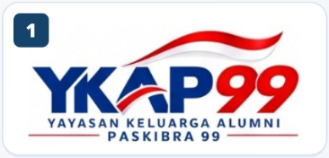
Tulisan YKAP 99 berwarna biru dan merah dengan sapuan bendera di atasnya.
Buka poster lengkap 20 logoHadiah Rp1.000.000 didukung oleh Vox Digital Kreatif. Untuk menambah hadiah atau mendukung acara, bicarakan sponsorship dengan Fandi.
Terbuka untuk semua angkatan, gratis. Kakak boleh mengirim lebih dari satu karya orisinal beserta cerita di baliknya.
Pengiriman karya sudah ditutup.
Kuesioner alumni
Pilih Kumpul 5 Desember untuk memberi kabar dan satu suara untuk lokasi. Sudah pernah mengisi survei yayasan? Kakak bisa langsung ke bagian kumpul.
Pilih Survei yayasan. Ada 11 pertanyaan inti tanpa nama dan 6 pertanyaan tambahan opsional. Kontak undian GoPay disimpan terpisah.
Galeri foto kegiatan
Dari lapangan sekolah sampai piknik keluarga, ini potret pertemuan kita dari waktu ke waktu. Ketuk foto untuk melihatnya lebih dekat.
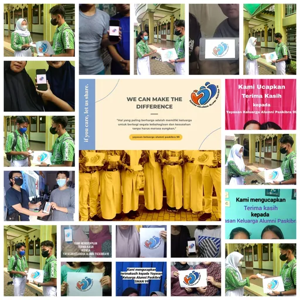
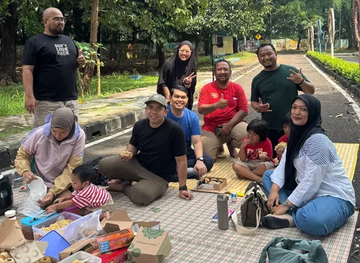
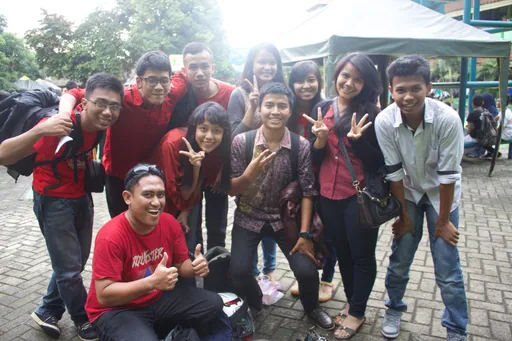
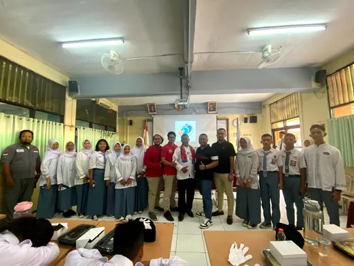
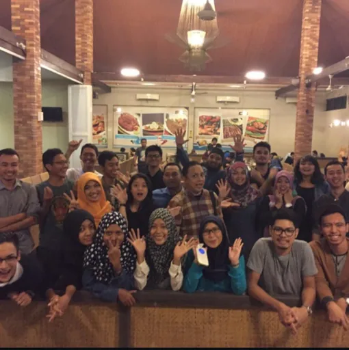
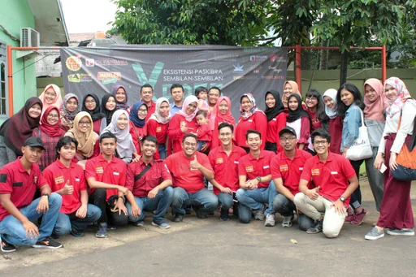
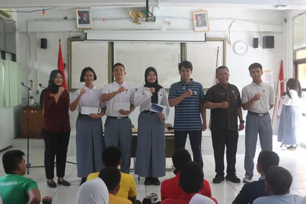
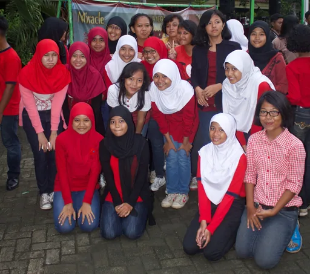
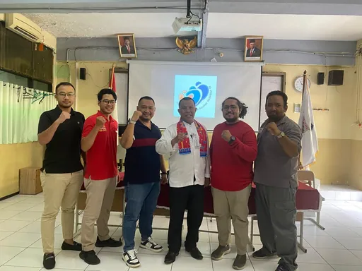
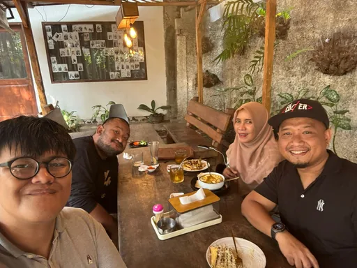
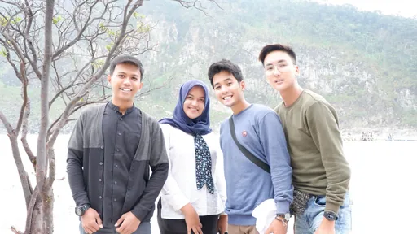
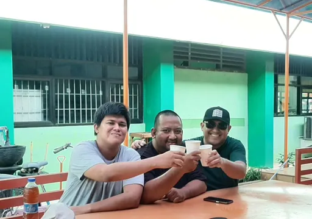
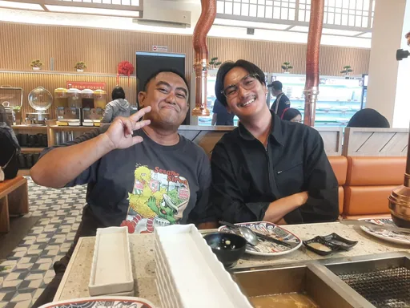
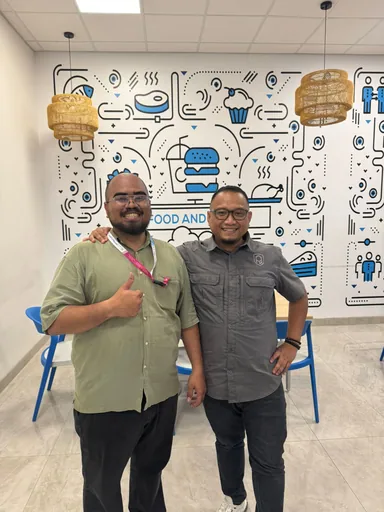
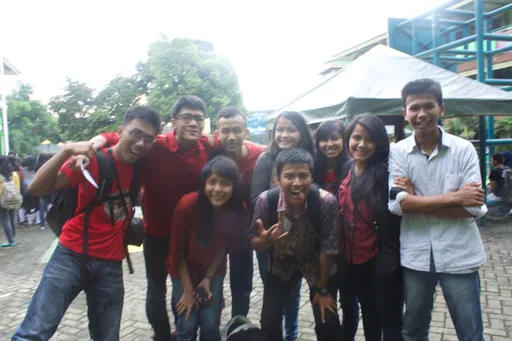
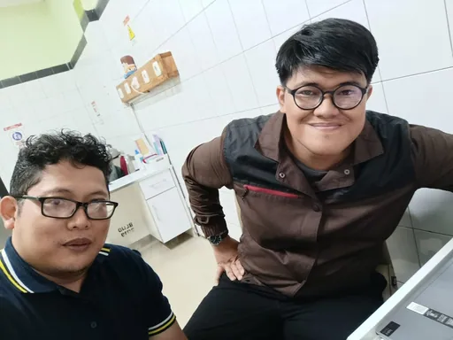
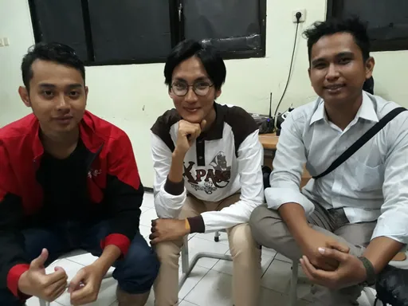